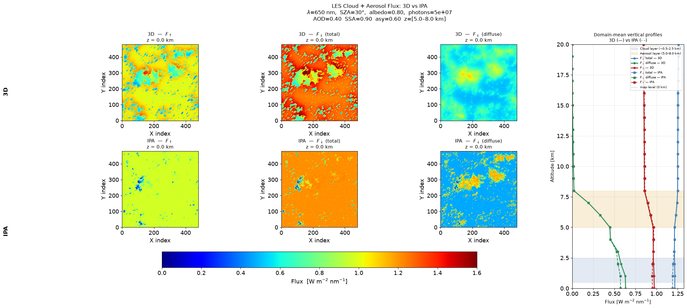

Step 0: Prerequisites
Before installing EaR³T you need a working terminal, git, conda,
and a Fortran compiler. Run the check script below — if anything is missing, follow the
platform instructions underneath.
0a. Quick check
Open a terminal and run:
for cmd in git conda gfortran gcc; do
if command -v $cmd &>/dev/null; then
echo "✓ $cmd: $(${cmd} --version 2>&1 | head -1)"
else
echo "✗ $cmd: NOT FOUND — see install instructions below"
fi
doneAll four should show ✓ before you continue. If not, use the platform-specific instructions below.
0b. Windows: set up WSL2 first
- Open PowerShell as Administrator and run:
wsl --install - Reboot when prompted.
- Launch Ubuntu from the Start menu — this opens your Linux terminal.
- Continue with the Ubuntu instructions below.
0c. Install missing tools
macOS:
# git + Xcode Command Line Tools (includes Apple clang):
xcode-select --install
# gfortran + GNU gcc via Homebrew (recommended):
brew install gcc
# This installs gfortran as "gfortran-14" (or similar version number).
# Create an unversioned alias so build systems find it:
ln -sf $(brew --prefix gcc)/bin/gfortran-* /usr/local/bin/gfortran
# Alternatively, get gfortran through conda (works inside the er3t environment):
conda install -c conda-forge gfortranUbuntu / Debian / WSL2:
sudo apt-get update
sudo apt-get install git gfortran gcc build-essentialconda / Miniconda (if not installed):
Download from Miniconda
and follow the installer. Restart your terminal after installation, then verify with
conda --version.
gfortran-14). If MCARaTS or libRadtran make fails with
"gfortran: command not found", either create the alias above or set FC=gfortran-14
(matching your installed version) in the relevant Common.mk file.
0d. Disk space and connectivity
- ~10 GB free disk space (data packages for libRadtran and satellite inputs)
- Internet access — EaR³T downloads satellite data automatically at runtime
Directory structure
All components live as siblings under a single install directory. We call it
ERTDIR throughout this guide — choose any location you like, for example
~/ert3d or ~/projects/er3t-install.
ERTDIR/
er3t-edu/
er3t/ ← EaR³T teaching fork (Step 1)
docs/
source/
hparx/ ← hparx Fortran library (Step 3a)
mcarats-0.10.3/ ← MCARaTS solver (Step 3b)
mcarats-examples-0.10.3/ ← MCARaTS example inputs (optional)Create the directory, define it as a shell variable, and move into it before starting.
The $ERTDIR variable is used in all subsequent steps so you don't have to
type the full path repeatedly — add it to your shell startup file to make it permanent.
echo $SHELL. If it prints /bin/bash or /bin/zsh
(most Linux and modern macOS), use export VAR=value and edit
~/.bashrc or ~/.zshrc. If it prints /bin/tcsh or
/bin/csh, use setenv VAR value (no equals sign, no quotes needed
for simple paths) and edit ~/.cshrc or ~/.tcshrc.
After editing your rc file, apply changes to the current session with
source ~/.bashrc (or source ~/.cshrc etc.) — otherwise the
new variables won't be available until you open a new terminal.# bash / zsh:
export ERTDIR=~/ert3d # choose your preferred location
mkdir -p $ERTDIR
cd $ERTDIR
# tcsh / csh — same effect, different syntax:
setenv ERTDIR ~/ert3d
mkdir -p $ERTDIR
cd $ERTDIRAll subsequent steps assume $ERTDIR is defined and you are running
commands from inside it unless noted otherwise.
Step 1: Conda Environment
teaching/summer-school-2026). The clone command below will be
finalized before the summer school begins. If you are installing right now, please
contact the instructor for the current URL.
Clone the EaR³T teaching branch and set up the conda environment:
cd $ERTDIR
git clone -b teaching/summer-school-2026 https://github.com/hong-chen/er3t.git
cd er3t
conda env create -f er3t-env.yml
conda activate er3tThis clones the summer-school teaching branch of EaR³T directly from the upstream
repository at hong-chen/er3t.
The branch is based on release/v0.2.0-alpha.1 and adds the summer-school
examples and minor fixes described in this guide.
The environment includes all required Python packages. Key dependencies:
numpy,scipy,matplotlibh5py,netCDF4,pyhdfcartopy,owslibrequests,tqdm
Step 2: Install EaR³T (Python package)
cd $ERTDIR/er3t
pip install -e .The conda environment from Step 1 installed all of EaR³T's dependencies (numpy,
h5py, cartopy, etc.) but not EaR³T itself — conda only knows about packages in its
repositories, and EaR³T is distributed via GitHub. This pip install step
registers the cloned source tree as a Python package so that import er3t works
from anywhere on your system.
The -e (editable) flag means the installation points directly at the source
files rather than copying them. Any changes you make to the EaR³T code take effect immediately,
without reinstalling — which is useful if you want to experiment with or extend the toolbox
during the summer school.
Step 2a: Download er3t data package
EaR³T ships its own data directory — atmosphere profiles, solar flux tables, absorption
cross-sections, phase functions, and slit functions. This directory is not included in the
git repository (it's too large) and must be downloaded separately using the provided
install script, which uses gdown (already in your conda environment).
Run from inside $ERTDIR/er3t/ (the cloned teaching branch):
cd $ERTDIR/er3t
bash install.shThis also downloads the REPTRAN gas absorption database directly from the libRadtran project (Gasteiger et al. 2014). Total download is approximately 180 MB; allow a few minutes on a fast connection.
Step 2b: Download example auxiliary data
The example scripts need auxiliary input files (LES cloud fields etc.) that are too large for git. Download them with:
cd $ERTDIR/er3t/examples
bash install-examples.shStep 3: Install MCARaTS (3D Monte Carlo solver)
MCARaTS is a Fortran-based 3D Monte Carlo radiative transfer solver developed by H. Iwabuchi (Tohoku University). It is the primary 3D solver used by EaR³T. Version 0.10.3 is used here.
- hparx-pub-20160906_1749.tar.gz — hparx library (MCARaTS dependency)
- mcarats-0.10.3.tar.gz — MCARaTS source code
- mcarats-examples-0.10.3.tar.gz — MCARaTS example inputs (optional but recommended)
3a. Build hparx (required dependency)
Extract and build from inside $ERTDIR — hparx will sit alongside er3t/:
cd $ERTDIR
tar -xzf hparx-pub-20160906_1749.tar.gz # creates $ERTDIR/hparx/
cd hparxOpen Common.mk (e.g. vim Common.mk or nano Common.mk).
The file has two compiler blocks — one for Intel Fortran (ifort) and one for
GNU Fortran (gfortran). You must comment out the entire ifort block
and uncomment the gfortran block. The flags -fast,
-no-ipo, and -warn are Intel-specific and will cause errors with
gfortran if left active. The result should look like this:
#FC = ifort
#FCFLAGS = -fast -no-ipo -warn all
FC = gfortran
FCFLAGS = -O -WallBuild and record the path:
make
# bash / zsh — add to ~/.bashrc or ~/.zshrc, then source it:
export HPARX_PATH=$ERTDIR/hparx
source ~/.bashrc # (or source ~/.zshrc)
# tcsh / csh — add to ~/.cshrc or ~/.tcshrc, then source it:
setenv HPARX_PATH $ERTDIR/hparx
source ~/.cshrcA successful build ends with Archiving... libhparx.a and Done.
A few gfortran warnings about character truncation, integer division, and uninitialized
variables are expected and harmless — they reflect the original ifort-targeted source code
and do not affect correctness.
3b. Compile MCARaTS
Extract MCARaTS back into ERTDIR — it sits alongside er3t/ and hparx/:
cd $ERTDIR
tar -xzf mcarats-0.10.3.tar.gz # creates ERTDIR/mcarats-0.10.3/
cd mcarats-0.10.3/srcOpen Common.mk (e.g. vim Common.mk). Make two edits:
- As with hparx, comment out the entire ifort block and uncomment the gfortran block.
- Find the
LIB_DIRline — it defaults to${HOME}/local/hparx— and replace it with the absolute path to your compiled hparx directory. Shell variables like$ERTDIRare not expanded bymake, so you must paste in the literal path. Runecho $HPARX_PATHin your terminal to get the value to paste.
The relevant section of Common.mk should end up looking like this:
#FC = ifort
#FCFLAGS = -fast -no-ipo -warn all
FC = gfortran
FCFLAGS = -O3 -Wall
LIB_DIR = /absolute/path/to/your/hparx # e.g. /Users/yourname/ert3d/hparxBuild:
makeThis produces the mcarats executable in ERTDIR/mcarats-0.10.3/src/.
EaR³T locates it via the environment variable MCARATS_V010_EXE, which must point
to the full path of the binary — not just the directory. Add this to your shell
startup file and reload it:
# bash / zsh — add to ~/.bashrc or ~/.zshrc, then source it:
export MCARATS_V010_EXE="$ERTDIR/mcarats-0.10.3/src/mcarats"
source ~/.bashrc # (or source ~/.zshrc)
# tcsh / csh — add to ~/.cshrc or ~/.tcshrc, then source it:
setenv MCARATS_V010_EXE "$ERTDIR/mcarats-0.10.3/src/mcarats"
source ~/.cshrcVerify it is set correctly:
echo $MCARATS_V010_EXE # should print the full path to the mcarats binary
$MCARATS_V010_EXE # should print MCARaTS usage/version info, not "command not found"Step 4: Install libRadtran (1D benchmark solver)
00_er3t_bmk.py,
the benchmark that directly compares the 1D and 3D solvers and is the pedagogical centrepiece
of the summer school. You can skip this step if you only want to confirm that MCARaTS compiled
correctly, but come back to it before running any projects.libRadtran is used by EaR³T as a 1D solver for benchmarking and as a computational shortcut for spectrally resolved calculations.
# Download from http://www.libradtran.org
mkdir -p ~/libradtran/v2.0.6
tar -xvzf libRadtran-2.0.6.tar.gz -C ~/libradtran/v2.0.6 --strip-components=1
cd ~/libradtran/v2.0.6
./configure --prefix=${PWD}
make
make checkAdd the libRadtran root directory to your shell environment. EaR³T uses the variable
LIBRADTRAN_V2_DIR and constructs paths like $LIBRADTRAN_V2_DIR/bin/uvspec
and $LIBRADTRAN_V2_DIR/data/ automatically — so point it at the root, not a subdirectory:
# bash / zsh — add to ~/.bashrc or ~/.zshrc, then source it:
export LIBRADTRAN_V2_DIR="${HOME}/libradtran/v2.0.6"
source ~/.bashrc
# tcsh / csh:
setenv LIBRADTRAN_V2_DIR "${HOME}/libradtran/v2.0.6"
source ~/.cshrcOptional data packages (recommended)
reptran— correlated-k gas absorption (needed for spectrally resolved calculations)ic_yang2013— ice crystal optical propertiesoptprop— additional optical property tables
make check step requires ndiff
and gawk. Install via your system package manager (brew on macOS,
apt-get on Ubuntu) if missing.
Step 5: Verify your installation
Before running the examples, confirm that all components are working correctly. A verification script is provided in the examples directory:
cd $ERTDIR/er3t/examples
conda activate er3t
python verify_install.pyThe script checks seven things in order: Python version, core package imports, atmosphere module, absorption databases, Mie phase function tables, and the MCARaTS executable. Each line prints a symbol:
- ✓ — component works correctly
- ✗ — something failed; a hint is printed below it
- — — skipped (expected; not needed for the summer school examples)
A successful install looks like this:
✓ Python 3.12.x
✓ numpy / scipy / matplotlib / h5py / netCDF4
✓ er3t (installed at .../er3t-edu/er3t/er3t/__init__.py)
✓ atm_atmmod — US standard atmosphere, 41 levels
— abs_16g (abs_16g.h5 not in data package — not needed for examples 01–05)
✓ abs_rep @ 500 nm, target=coarse
✓ pha_mie_wc @ 500 nm (mean asymmetry g = 0.xxx)
✓ MCARaTS executable found: .../mcarats-0.10.3/src/mcarats
Summary: 6 passed 0 failed 1 skipped
All required checks passed — your er3t installation is ready!MCARATS_V010_EXE is not set in the current shell session. Run
echo $MCARATS_V010_EXE — if it prints nothing, source your shell
startup file (source ~/.bashrc or source ~/.zshrc) and
try again.
You can also test network connectivity and NASA Worldview access with the optional flag (requires internet, ~30 seconds):
python verify_install.py --worldviewStep 6: Run the MCARaTS Examples
The five example scripts walk you from the simplest possible case (clear sky, 1D flux) up to a full 3D radiance simulation over an LES cloud field. Each one is self-contained — you run it, it produces PNG figures and HDF5 data files, and you can report back what you see.
MCARaTS works by simulating individual photons one at a time. Each photon travels a random path — scattering, absorbing, reflecting — governed by the optical properties of the atmosphere and cloud. The result (flux, radiance) is the average over many such photons. Because each run uses a different set of random numbers, two independent runs with the same inputs give slightly different answers. That difference is the Monte Carlo noise.
The fundamental scaling law:
Noise ∝ 1/√N
where N is the number of photons per spectral bin. To halve the noise you need four times as many photons. To achieve one-tenth the noise you need one hundred times as many photons. This is why production runs with 10⁸ photons take hours while quick tests with 10⁶ take minutes.
Not all quantities are equally noisy. The relative noise (σ/mean) depends on the signal strength: a small-signal quantity estimated from the same photon pool is always noisier in relative terms than a large-signal one. In a clear sky at 650 nm:
- Direct-beam flux is ~98% of the total — relative noise is tiny (~0.1% at 10⁶ photons).
- Diffuse flux is ~2% of the total — relative noise is ~2% at 10⁶ photons.
- Upwelling flux is tiny (no clouds, low albedo) — relative noise is ~2–4%.
This is not a weakness of the simulation — it is a fundamental statistical property of any Monte Carlo estimator, and it is the same reason that measuring a faint star requires a longer telescope exposure than measuring a bright one.
How to use the noise diagnostic in Example 01:
The script plots ±1σ shaded bands around each flux profile.
The terminal prints the percentage noise for each component.
Start with photons=1e4 to see clearly visible bands, then increase
step by step to watch them shrink. Aim for <1% for scientific results.
MCARATS_V010_EXE is set in your current shell session.
conda activate er3t
echo $MCARATS_V010_EXE # must print the full path to the mcarats binary
cd $ERTDIR/er3t/examplesHow the scripts are structured
At the top of each script is a clearly marked student control block where you can change three main settings before running:
| Parameter | What it controls | Suggested values to try |
|---|---|---|
wavelength |
Wavelength in nm. Determines gas absorption strength, Rayleigh scattering intensity, and solar irradiance. | 400, 500, 650, 860, 1640 |
photons |
Number of Monte Carlo photons per spectral bin. More photons = less noise = longer runtime. | 1e6 (fast, for testing), 1e7 (recommended), 1e8 (production) |
solver |
The key pedagogical toggle. '3D' = full horizontal photon transport; 'IPA' = each column treated independently (standard satellite retrieval assumption). |
Always run both and compare! |
When you run a script it first prints a short startup summary to the terminal
echoing the settings it will use — confirm these look right before the simulation starts.
On a laptop at photons=1e6 each script takes a few minutes.
Example 01 — Clear-sky flux profile
The simplest case: sun shining through a clear, gas-only atmosphere. No clouds, no aerosol. Good first test that EaR³T and MCARaTS are connected correctly.
python 01_clear_sky_flux.pyExpected output:
- Terminal: MCARaTS runs 3 × (number of spectral bins) jobs, prints progress.
- PNG file:
01_clear_sky_flux-example_01_flux_clear_sky_3d.png— vertical profiles (0–20 km) of upwelling (red), total downwelling (blue), direct beam (green), and diffuse downwelling (pink) flux.
What to look for: Direct beam decreases smoothly with depth as the
atmosphere absorbs/scatters it. Diffuse increases toward the surface. Upwelling is small
(no clouds to reflect). For a clear sky, solver='IPA' gives identical results
to solver='3D' — the difference only shows up once there are inhomogeneous clouds.
Try wavelength=400 vs wavelength=1640 to see the effect of Rayleigh
scattering (much stronger in the blue).
The script runs Nrun independent Monte Carlo batches with different random seeds.
The spread between them is pure statistical noise — not physics.
It is plotted as a semi-transparent shaded band (±1σ) around each profile.
The terminal also prints Max noise: X.X%.
Try this exercise — reducing photons step by step:
- Set
photons = 1e4and run. The bands will be extremely wide — the simulation is essentially useless at this photon count. - Set
photons = 1e5. Bands narrow but are still clearly visible, especially on the diffuse component (smallest signal, highest relative noise). - Set
photons = 1e6(default). Bands are visible but acceptable for a quick test. Note that Max noise is typically 5–15%. - Set
photons = 1e7. Bands become very narrow on the direct beam but may still be visible on diffuse. Max noise typically drops to 1–3%. - Set
photons = 1e8. Bands are barely visible. Max noise < 1%. This is production quality — but takes much longer.
Key observations:
- Noise scales as 1/√N (halving noise requires 4× more photons).
- The diffuse component is always noisiest in relative terms because it is the smallest signal — any small absolute noise becomes a large percentage. This matters when you need accurate diffuse-to-direct ratios.
- Increasing
Nrungives a better estimate of the noise but does not reduce it — only more photons does that. - For the 3D cloud examples (02–05), you need more photons than for clear sky because the spatial heterogeneity adds another source of run-to-run variance.
Rule of thumb: Max noise < 1% is good for scientific use. Max noise < 5% is acceptable for qualitative exploration. If your shaded band is as wide as your mean profile, start over with more photons.
Example 02 — 3D cloud flux (LES field)
Adds the LES cloud field. Both 3D and IPA solvers run automatically in one call and the
results are placed side-by-side in a single figure.
Requires data/00_er3t_mca/aux/les.nc from Step 2b.
python 02_3d_cloud_flux.pyExpected output: A single PNG with two rows of flux maps — row 1 from the full 3D solver, row 2 from IPA — showing F_up, F_down (total), and F_down (diffuse) at the selected altitude level.
What to look for: The spatial patterns differ between 3D and IPA
even though domain means are similar. In 3D, photons scatter sideways out of thick cloud
columns into neighbouring clear columns — producing brighter cloud edges, darker centres,
and smoother gradients. IPA treats every column independently so cloud edges are artificially
sharp. Setting aod=0.0 in Example 03 should reproduce this result exactly.
Example 03 — 3D cloud + aerosol layer, flux
Extends Example 02 with a horizontally uniform aerosol layer at any altitude. Runs both 3D and IPA solvers and produces three output figures.
python 03_cloud_aerosol_flux.pySample output (default settings: AOD = 0.4, SSA = 0.9, aerosol at 5–8 km):

Output files:
03_cloud_aerosol_flux-map_<wl>nm.png— six flux maps (3D and IPA, all three components) in km coordinates, with a star marking the user-defined output location (x0, y0)03_cloud_aerosol_flux-profile_<wl>nm.png— domain-mean and point vertical profiles of all flux components from 0–20 km03_cloud_aerosol_flux-xsection_<wl>nm.png— x and y cross-sections of flux at the output location, normalised by the TOA irradiance
Key parameters to explore:
aod— aerosol optical depth; set to0.0to reproduce Example 02 exactlyssa— single scattering albedo:0.9= mostly scattering (sea salt),0.7= absorbing (black carbon, smoke)z_bot,z_top— layer altitude [km]; try placing the aerosol inside the cloud layer to observe the direct interactionx0,y0— output location in km; the star on the maps and the point profile let you verify that the cross-sections correspond to the correct pixel
What to look for: An absorbing aerosol (low SSA) reduces surface downwelling and heats the aerosol layer. The vertical profile always shows more diffuse radiation in 3D than IPA regardless of aerosol position — a horizontal photon-transport effect IPA cannot reproduce.
Example 04 — Spectral flux: 3D cloud + aerosol
Extends Example 03 across multiple wavelengths simultaneously, and adds multiple user-defined output locations. Runs both 3D and IPA solvers at each wavelength and produces a single comparison figure.
python 04_cloud_aerosol_spectral.pyOutput: A 2×4 figure — rows are IPA (top) and 3D (bottom); columns are the LWP map, upwelling spectra, downwelling spectra, and an x cross-section of all flux components at the first wavelength and first output location.
Key parameters to explore:
wavelengths— list of wavelengths in nm; try spanning from UV to SWIR (e.g.[400, 650, 860, 1640]) to see gas absorption featuresx_out,y_out,z_out— lists of output locations; add a second point inside a thick cloud column and compare its spectrum with a clear-sky pointaod,ssa,asy— aerosol optical properties; the ±1σ shaded bands show Monte Carlo noise on the spectra
What to look for: Gas absorption bands (water vapour near 1400 nm, oxygen A-band near 760 nm) appear as dips in the downwelling spectrum. The 3D–IPA difference is spectrally flat for a purely scattering aerosol but develops spectral structure when absorption is included.
Example 05 — 3D cloud radiance (satellite view)
Switches from flux to radiance: simulates what a satellite at 705 km altitude would observe looking through the LES cloud field. Both 3D and IPA solvers run in one call. This is the most direct connection to real satellite imagery and cloud retrieval biases.
python 05_3d_cloud_radiance.pyOutput files:
05_3d_cloud_radiance-comparison_<wl>nm.png— 4-panel figure: 3D reflectance image, IPA reflectance image, difference map (3D − IPA, diverging red–blue), and a pixel-to-pixel hexbin scatter (3D vs IPA)05_3d_cloud_radiance-map_<wl>nm.png— liquid water path (LWP) and cloud optical thickness (COT) maps of the LES scene05_3d_cloud_radiance-r_tau_<wl>nm.png— IPA reflectance vs COT (hexbin density), with three analytical Coakley two-stream curves and a best-fit curve overlaid
Key parameters to explore:
solar_zenith_angle— try 60° for long shadows and amplified 3D effectssensor_zenith_angle— off-nadir viewing (30–45°) makes shadows dramaticsurface_albedo— 0.03 = ocean, 0.8 = fresh snow; affects the r(τ) baselineplot_only = True— skip RT entirely and regenerate all figures instantly from the saved HDF5 files; use this to tweak colour scales or add annotations without re-running MC
What to look for: In the difference map, red = 3D brighter (cloud edges, clear-sky halos), blue = 3D darker (optically thick cloud centres). The r(τ) plot shows how well the simple two-stream theory predicts the MC result — and the fitted g and SSA reveal the effective optical properties of the LES cloud field at that wavelength.
A standalone plotting script is also provided:
python 05_3d_cloud_radiance_plot.pyThis reads only the saved HDF5 and scene files — no er3t import needed — and is a clean starting point for students who want to add their own analysis or plots.
CU Research Computing (Alpine / SLURM)
For students with access to CU's Alpine cluster, larger runs can be submitted via SLURM. Add the following header to your example script:
#!/bin/env python
#SBATCH --partition=amilan
#SBATCH --nodes=1
#SBATCH --ntasks=12
#SBATCH --ntasks-per-node=12
#SBATCH --time=01:00:00
#SBATCH --mail-type=ALL
#SBATCH --mail-user=your.email@colorado.edu
#SBATCH --output=sbatch-output_%x_%j.txt
#SBATCH --job-name=my_er3t_runThen submit with:
chmod +x my_script.py
sbatch my_script.pyTroubleshooting
This section will be populated as common issues are identified during the pre-school office hours.
- MCARaTS compile error: Ensure
gfortranis installed and the correct lines inCommon.mkare uncommented. - libRadtran configure fails: Check that
netcdf,hdf5, andgslare installed (via conda or system package manager). - Import errors in Python: Make sure the
er3tconda environment is active (conda activate er3t).
Resources
- EaR³T GitHub repository (hong-chen/er3t) — teaching branch:
teaching/summer-school-2026 - EaR³T documentation (readthedocs)
- libRadtran website
- MCARaTS v0.10.3 (Iwabuchi, Tohoku University) — also mirrored in this repo's source/ folder